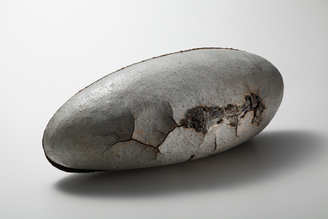
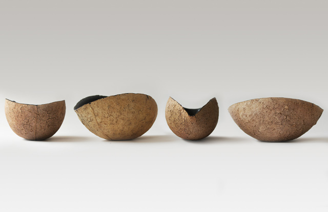
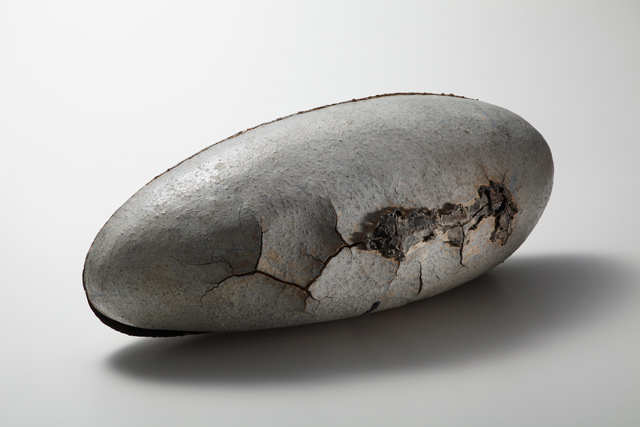
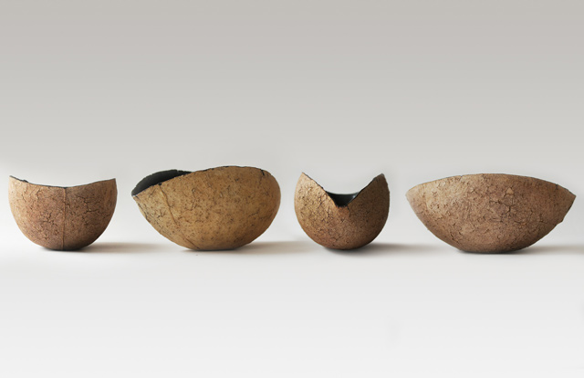

CONCEPT
こだわり
私は、陶芸で作品を作っています。
陶芸と聞くと、おそらく多くの人が食器や、
東洋の国々、土器などを想像するのではないでしょうか。
私の作品は普通の器の形をしていませんが、
陶芸を選んだのには理由があります。
私が、自分の考えを表現するためには
陶芸でなければならない必然性を感じているからです。
Ｉn Gifu Prefecture, ‘Minoyaki’ is the word
for the various ceramics and pottery
produced in the eastern agriculture region.
With a history of ceramic goods spanning a millennium,
they have supported Japanese ceramics until the present day,
with a domestic share of over 60%.
Foremost is the city of Toki,
famous in Japan for producing the donburi bowls used in izakaya pubs and restaurant.
WORKS
作品
 



MAKER
作り手
デザイン&ブランドディレクション
吉田由紀
プロダクトデザイナー。
PDAから車、バス、建築、家具など幅広いデザインを手がける。
間伐材デザイン「monacca」はMoMA（ニューヨーク近代美術館）
での販売をはじめ各国のデザイン展示会にも積極的に参加することで
世界市場での販売に成功を納めた。グッドデザイン受賞多数あり。
インテリアライフスタイル展エルデコ賞受賞、
インテリアライフスタイル展日本デザインコンサルタント賞受賞、
日本流行色協会(JAFCA)
オートカラーアォード審査員。
制作
芳泉窯
芳泉窯は、岐阜県の美濃焼きで有名な土岐市で1947年に創業した窯元です。
地元で有名な丼の生産から始まり、ラーメンや居酒屋の海外進出にともない、
日本から世界へ製品展開を広げてきました。クラフトマンシップに富んだ
形はもとより焼成方法や陶土へのこだわりから生まれるオリジナリティを
大切に商品作りをしています。
http://www.housen-nendo.com/